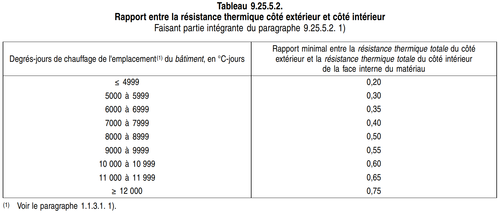
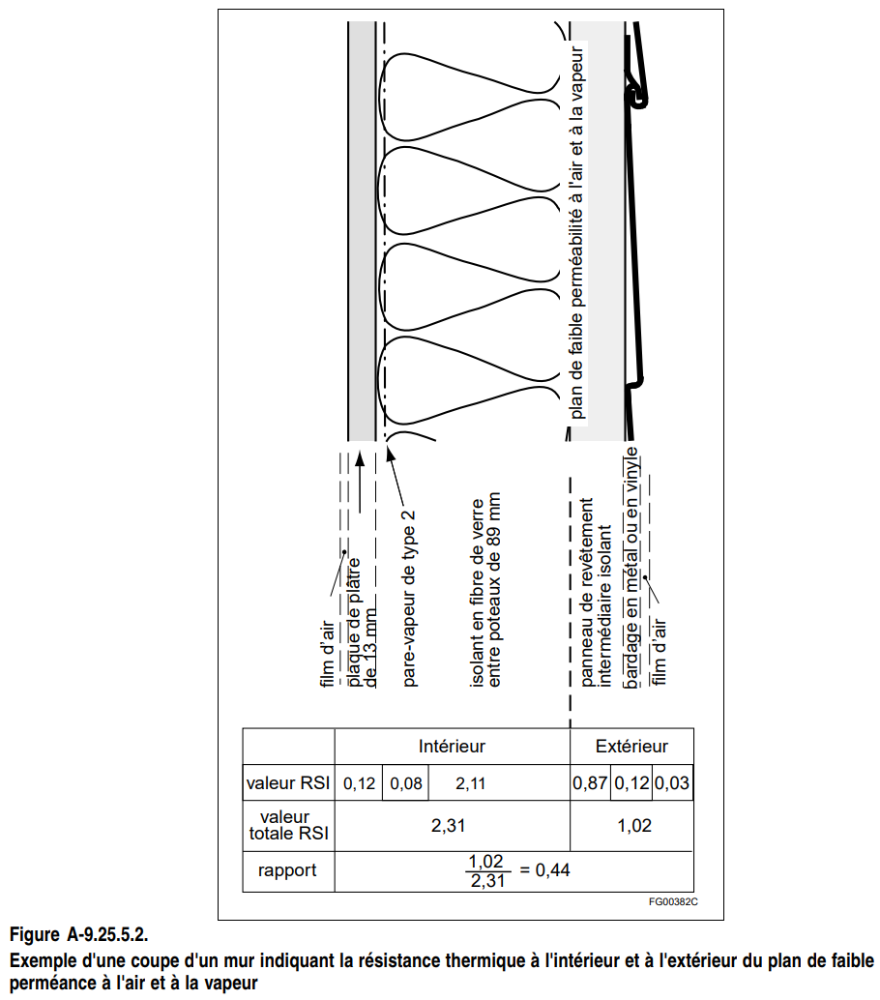
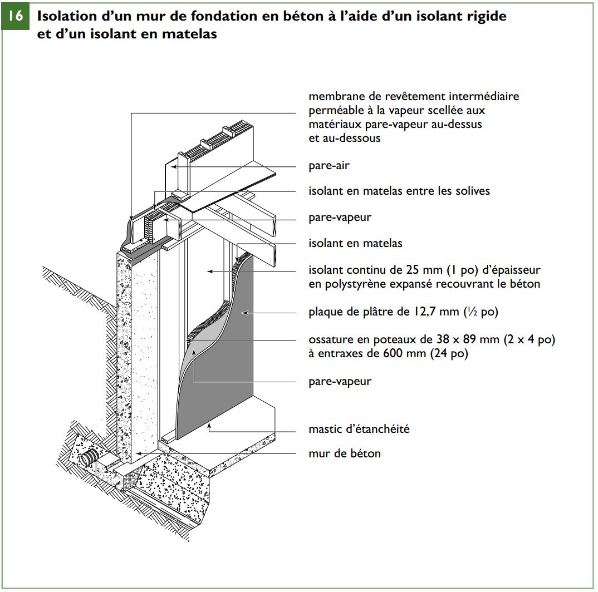

Pare-vapeur
Activer le mode plein écran
/Attachments/Pare-vapeur.jpg)
Pare-vapeur (vapour barrier) : élément destiné à empêcher la diffusion de la vapeur d’eau
De nombreux matériaux de construction sont perméables au passage de la vapeur d’eau, mais ceux qui sont classifiés comme pare-vapeur, comme la membrane de polyéthylène, affichent une très faible perméabilité et offrent donc une très forte résistance à la diffusion de la vapeur d’eau.
Bien que la section 9.25. traite séparément le pare-vapeur et l’étanchéité à l’air, dans un plafond ou un mur à ossature de bois traditionnelle ces fonctions sont souvent assurées par la même membrane qui s’oppose à la diffusion de l’humidité et au passage de l’air intérieur dans les vides des murs et du plafond.
Les ouvertures pratiquées dans cette membrane, pour les boîtes de sortie électrique par exemple, peuvent laisser passer l’air dans les vides de construction et des mesures spéciales doivent être prises pour les rendre aussi étanches que possible.
Il faut également faire bien attention aux autres parcours de fuite moins évidents comme les trous de passage des fils électriques, des tuyaux, les joints mur-plancher et mur-plafond et les interstices créés par le retrait des éléments d’ossature.
Si le matériau d’étanchéité à l’air possède aussi les caractéristiques d’un pare-vapeur (faible perméabilité à la vapeur d’eau), il faut choisir son emplacement avec soin si l’on veut éviter les problèmes d’humidité. (Voir la note A-9.25.1.2. ci-après et la note A-9.25.4.3. 2) suivante dans le chapitre)
La section 9.25. est rédigée de façon à permettre l’emploi de techniques nouvelles aussi bien que de matériaux traditionnels en feuilles, comme le polyéthylène, pour faire fonction de pare-vapeur/pare-air.
Matériaux
Extraits du Code de construction du Québec, Division B, Partie 9
9.25.5. Propriétés et emplacement des matériaux dans l’enveloppe du bâtiment
9.25.5.1. Généralités
(Voir l’annexe A.)
- Les matériaux en feuilles ou en panneaux incorporés aux ensembles décrits à l’article 9.25.1.1. doivent être conformes à l’article 9.25.5.2. si :
a) ils présentent :
i) une perméabilité à l’air inférieure à 0,1 L/(s · m2) à 75 Pa; et
ii) une perméance à la vapeur d’eau inférieure à 60 ng/(Pa · s · m2) lorsque celle-ci est mesurée conformément à la norme ASTM E 96/E 96M, « Water Vapor Transmission of Materials », selon la méthode du siccatif (vase sec); et
b) si l’utilisation prévue de l’espace intérieur où les matériaux sont mis en œuvre ne produit pas une humidité élevée. (Voir l’annexe A.)
-
Si l’utilisation prévue de l’espace intérieur produit beaucoup d’humidité, l’ensemble doit être conçu conformément à la partie 5.
-
Il n’est pas obligatoire que les matériaux de revêtement intermédiaire dérivés du bois d’au plus 12,5 mm d’épaisseur et conformes à l’article 9.23.17.2. répondent aux exigences du paragraphe 1). (Voir l’annexe A.)
9.25.5.2. Emplacement des matériaux à faible perméance
(Voir l’annexe A.)
- Les matériaux en feuilles ou en panneaux décrits à l’article 9.25.5.1. doivent être mis en oeuvre :
a) du côté chaud de l’ensemble de construction (voir l’article 9.25.4.2.);
b) à un endroit où le rapport entre la résistance thermique totale de tous les matériaux du côté extérieur de la couche imperméable la plus près de l’intérieur et la résistance thermique totale de tous les matériaux du côté intérieur de cette couche n’est pas inférieur aux valeurs du tableau 9.25.5.2.; ou
c) du côté extérieur d’une lame d’air mise à l’air libre.
- Dans le cas des murs, la lame d’air décrite à l’alinéa 1)c) doit être conforme à l’alinéa 9.27.2.2. 1)a).

Annexe 9.25.1.2.
A-9.25.1.1. Emplacement des matériaux à faible perméance
Matériaux à faible perméance à l’air et à la vapeur d’eau et incidence sur l’accumulation d’humidité
En général, l’emplacement d’un matériau à faible perméance à l’air dans un ensemble de construction n’est pas important; ce matériau peut limiter le passage de l’air intérieur vers l’extérieur s’il est situé près de la face extérieure de l’ensemble, ou près de la face intérieure ou à un emplacement intermédiaire, et ce type d’action est généralement bénéfique, que le matériau fasse partie ou non d’un système d’étanchéité à l’air.
Toutefois, si le matériau possède aussi les caractéristiques d’un pare-vapeur (c’est-à-dire faible perméabilité à la vapeur d’eau) et une faible résistance thermique, le choix de l’emplacement sera capital afin d’éviter l’accumulation d’humidité.
Un matériau à faible perméance à l’air et à la vapeur d’eau doit empêcher que l’humidité provenant de l’air intérieur qui se diffuse à travers les couches intérieures de l’ensemble ou qui y est transportée par les fuites d’air traverse l’ensemble. Ce transfert d’humidité ne cause habituellement pas de problème si le matériau est situé à un endroit où la température se maintient au-dessus du point de rosée de l’air intérieur, auquel cas la vapeur d’eau reste sous forme de vapeur et le degré d’humidité de l’ensemble s’équilibre avec celui de l’air intérieur, l’humidité cesse d’augmenter ou se stabilise à un faible taux et aucun dommage n’en résulte.
Toutefois, si le matériau à faible perméance à l’air et à la vapeur d’eau est situé à un endroit où la température se maintient sous le point de rosée de l’air, la vapeur d’eau se condense et s’accumule sous forme d’eau ou de glace, ce qui réduit le niveau d’humidité et favorise le déplacement d’une plus grande quantité de vapeur d’eau dans le mur. Si la température demeure sous le point de rosée pendant un certain temps, une importante quantité d’humidité pourrait s’accumuler. Au retour de températures plus douces, la présence d’un matériau à faible perméance à la vapeur d’eau peut retarder l’évaporation de l’humidité accumulée. L’humidité qui demeure pendant la saison chaude peut favoriser le développement de la pourriture.
Revêtement extérieur
Les revêtements extérieurs en feuilles ou en panneaux comme la tôle ont un degré de perméance inférieur à 60 ng/(Pa • s • m2).
Revêtement intermédiaire
Les revêtements intermédiaires peu perméables peuvent faire fonction de pare-vapeur s’il peut être démontré que la température du côté intérieur des matériaux utilisés ne tombera pas sous le point de saturation. C’est le cas notamment des revêtements intermédiaires isolants.
Systèmes d’étanchéité à l’air
Dans les constructions résidentielles, l’élément à faible perméance du système d’étanchéité à l’air offre souvent la résistance exigée contre la diffusion de la vapeur d’eau et fait donc aussi fonction de pare-vapeur. Il faut alors placer cet ensemble pare-vapeur et pare-air suffisamment près du côté chaud de l’ensemble pour que sa température demeure au-dessus du point de rosée à cet endroit.
Hypothèses suivies lors de l’élaboration du tableau 9.25.1.2.
L’article 9.25.1.2. précise qu’un matériau à faible perméance à l’air et à la vapeur d’eau doit être placé du côté chaud de l’ensemble, du côté extérieur d’une lame d’air mise à l’air libre, ou, s’il est situé à l’intérieur de l’ensemble, à un point où la face intérieure est susceptible d’être suffisamment chaude durant la majeure partie de la saison de chauffe pour qu’il ne se produise aucune accumulation importante d’humidité.
Cette dernière position se définit comme le rapport entre les valeurs de résistance thermique du côté extérieur et de la surface imperméable, côté intérieur, du matériau en question, en supposant qu’au moins un pare-vapeur de type 2 (60 ng/(Pa • s • m2)) soit installé conformément à la sous-section 9.25.4. suivante dans le chapitre.
Alinéa 9.27.2.2.1)a)
9.27.2.1. Réduction et prévention des infiltrations et des dommages
- Sauf s’ils sont protégés contre les précipitations ou s’il peut être démontré que les infiltrations de précipitations n’auront pas d’effet nuisible sur la santé et la sécurité des occupants, les murs extérieurs doivent être conçus et construits de manière :
a) à réduire au minimum l’infiltration des précipitations dans les murs; et
b) à prévenir l’infiltration des précipitations dans les espaces intérieurs. (Voir l’annexe A.)
- Sauf s’ils sont protégés contre des mécanismes de détérioration précis, comme les chocs mécaniques et le rayonnement ultraviolet, les murs extérieurs doivent être conçus et construits de manière à réduire au minimum la probabilité que leur performance ne soit réduite à des niveaux inacceptables sous l’effet de ces mécanismes.
A-9.25.5.2. Hypothèses suivies lors de l’élaboration du tableau 9.25.5.2.
Calcul de la résistance thermique entre le côté intérieur et le côté extérieur

[…]
La façon de calculer le rapport de résistance thermique entre le côté extérieur et le côté intérieur est illustrée dans la figure A-9.25.5.2. L’exemple de mur vu en coupe montre trois plans où des matériaux à faible perméance à l’air et à la vapeur ont été installés. Un pare-vapeur, installé pour satisfaire aux exigences de la sous-section 9.25.4., est situé du côté chaud de l’isolant, conformément à l’alinéa 9.25.5.2. 1)a) ainsi qu’aux paragraphes 9.25.4.1. 1) et 9.25.4.3. 2). Le bardage de vinyle comporte une lame d’air intégrée qui est drainée et mise à l’air libre, conformément à l’alinéa 9.25.5.2. 1)c). La position de la face intérieure du revêtement intermédiaire isolant à faible perméance doit, toutefois, être choisie en fonction de la résistance thermique du matériau par rapport à la résistance globale du mur et en fonction du climat où le bâtiment est situé.
[…]
A-9.25.5.1. 1) Valeurs de perméance à l’air et à la vapeur d’eau.
Le tableau A-9.25.5.1. 1) indique la perméabilité à l’air et la perméance à la vapeur d’eau d’un certain nombre de matériaux courants. Ces valeurs s’appliquent à des matériaux types; les produits exclusifs peuvent présenter des valeurs légèrement différentes (pour connaître leurs valeurs, consulter les fiches techniques courantes des fabricants).
Les valeurs concernent l’épaisseur indiquée. La perméance est inversement proportionnelle à l’épaisseur; par conséquent, des épaisseurs supérieures donneront des valeurs de perméance réduites.
/Attachments/1717075289303.png)
Diffusion de vapeur d’eau
Extraits du Code de construction du Québec, Division B, Partie 5
5.5.1.1. Résistance exigée à la diffusion de vapeur d’eau
(Voir l’annexe A.)
-
Tout composant ou ensemble de construction soumis à des différences de température et de pression de vapeur d’eau doit être constitué de matériaux ou composants dont les propriétés et l’emplacement sont tels qu’ils contrôlent la diffusion de vapeur d’eau ou permettent la ventilation vers l’extérieur, de façon à réduire au minimum l’accumulation de condensation dans le composant ou l’ensemble de construction.
-
Sous réserve du paragraphe 3), un pare-vapeur doit être mis en oeuvre pour assurer la principale résistance à la diffusion de vapeur d’eau.
-
Un pare-vapeur n’est pas exigé s’il peut être démontré que la diffusion de vapeur d’eau n’aura pas d’effets indésirables sur l’un ou l’autre des éléments suivants :
a) la santé ou la sécurité des occupants;
b) l’utilisation prévue du bâtiment; ou
c) le fonctionnement des installations techniques.
A-5.5.1.1. Résistance exigée à la diffusion de vapeur d’eau
La résistance à la vapeur d’eau est nécessaire pour réduire la probabilité de condensation à l’intérieur des ensembles de construction, ainsi que la détérioration des matériaux et la croissance de champignons qui pourraient s’ensuivre. Les détériorations comme la pourriture et la corrosion peuvent entraîner la défaillance des composants de construction et leurs assemblages, et nuire à la bonne performance des installations techniques du bâtiment. Certains champignons peuvent se révéler très néfastes pour la santé.
Au Canada, peu de bâtiments soumis à des différences de température et de pression de vapeur d’eau seraient construits ou exploités de telle manière qu’il serait inutile de tenir compte, dans leur conception, du contrôle de la diffusion de vapeur d’eau. Les ensembles abritant certains espaces industriels, tels que ceux décrits dans la note A-5.4.1.1. par exemple, pourraient être exemptés.
Dans le cas des habitations, et de la plupart des espaces destinés à l’usage des personnes, on convient en général qu’il est nécessaire d’assurer le contrôle de la diffusion de vapeur d’eau, même dans les régions canadiennes où le climat est doux. Les questions qui se posent alors concernent le niveau de contrôle requis.
L’expression « réduire au minimum » est utilisée au paragraphe 5.5.1.1. 1) parce qu’il n’est pas nécessaire d’éliminer absolument toutes les accumulations d’humidité dans un ensemble de construction. La condensation accidentelle est normale mais devrait être suffisamment rare, en quantité assez faible et sécher assez rapidement pour empêcher la détérioration des matériaux et la croissance de moisissures ou de champignons.
Propriétés du Pare-vapeur
Extraits du Code de construction du Québec, Division B, Partie 5
5.5.1.2. Propriétés des pare-vapeur et mise en œuvre
(Voir la note A-5.3.1.2.)
- Les pare-vapeur doivent être placés à l’intérieur du composant ou de l’ensemble de construction et avoir une perméance suffisamment faible pour :
a) réduire au minimum le transfert d’humidité par diffusion vers toute surface suffisamment froide pour provoquer de la condensation aux conditions de température et d’humidité de calcul; ou
b) réduire le transfert d’humidité par diffusion vers toute surface suffisamment froide pour provoquer de la condensation aux conditions de température et d’humidité de calcul, à un taux qui ne permette pas une accumulation suffisante d’humidité pour causer de la détérioration ou pour avoir des effets indésirables sur l’un ou l’autre des éléments suivants :
i) la santé ou la sécurité des occupants;
ii) l’utilisation prévue du bâtiment; ou
iii) le fonctionnement des installations techniques. (Voir l’annexe A.)
-
La conformité au paragraphe 1) des enduits appliqués sur les plaques de plâtre pour assurer la résistance exigée à la diffusion de vapeur d’eau doit être démontrée par un essai conforme à la norme CAN/CGSB-1.501-M, « Méthode de détermination de la perméance des panneaux muraux revêtus ».
-
La conformité au paragraphe 1) des enduits appliqués sur d’autres matériaux que des plaques de plâtre pour assurer la résistance exigée à la diffusion de vapeur d’eau doit être démontrée par un essai conforme à la norme ASTME 96/E 96M, « Water Vapor Transmission of Materials », par la méthode du siccatif (dry cup).
A-5.5.1.2. 1) Pare-vapeur et mise en oeuvre.
L’été, la température intérieure de bon nombre de bâtiments est inférieure à celle de l’extérieur. Le transfert de vapeur d’eau se fait de l’extérieur vers l’intérieur. Cependant, en raison de la brièveté de la saison chaude presque partout au Canada, des écarts relativement faibles de pression de vapeur et de la façon dont les ensembles sont construits, l’humidité accumulée a le temps de se dissiper avant d’entraîner la détérioration des matériaux.
Par contre, des bâtiments comme les entrepôts frigorifiques peuvent fonctionner presque toute l’année à des températures se situant sous les températures extérieures. Le côté « chaud » des ensembles de construction est alors le côté extérieur et une analyse détaillée des conditions ambiantes au fil des saisons est alors exigée.
Les calculs relatifs au transfert de chaleur et à la diffusion de vapeur d’eau dans des conditions d’équilibre servent à déterminer les degrés acceptables de perméance des pare-vapeur et leur emplacement à l’intérieur des ensembles de construction.
Protection contre l’humidité, l’eau et l’infiltration des gaz souterrains
Extraits du Code de construction du Québec, Division B, Partie 9
9.13.2.2. Normes de matériaux
…
- Sauf indication contraire dans la présente section, les matériaux de protection extérieure contre l’humidité doivent être conformes à l’une des normes suivantes :
[…]
f) CAN/CGSB-51.34-M, « Pare-vapeur en feuille de polyéthylène pour bâtiments »; […]
9.13.4.2. Normes de matériaux
1) Les matériaux de protection contre l’infiltration de gaz souterrains utilisés pour les planchers sur sol doivent être conformes à la norme CAN/CGSB-51.34-M, « Pare-vapeur en feuille de polyéthylène pour bâtiments ».
9.25.4. Pare-vapeur
9.25.4.2. Pare-vapeur
-
Les pare-vapeur doivent avoir une perméance d’au plus 60 ng/(Pa · s · m2), mesurée conformément à la norme ASTM E 96/E 96M, « Water Vapor Transmission of Materials », au moyen de la méthode du siccatif (vase sec).
-
Si l’utilisation prévue de l’espace intérieur produit beaucoup d’humidité, l’ensemble doit être conçu conformément à la partie 5 (voir l’annexe A).
-
Si le polyéthylène ne doit servir que de pare-vapeur, il doit être conforme à l’alinéa 4.4, Stabilité thermique, et à l’alinéa 5.7, Temps d’induction à l’oxydation, de la norme CAN/CGSB-51.34-M, « Pare-vapeur en feuille de polyéthylène pour bâtiments ».
-
Les autres membranes pare-vapeur que le polyéthylène doivent être conformes à la norme CAN/CGSB-51.33-M, « Pare-vapeur en feuille, sauf en polyéthylène, pour bâtiments ».
-
Si un enduit est appliqué sur des plaques de plâtre et s’il fait fonction de pare-vapeur, la perméance de cet enduit doit être déterminée conformément à la norme CAN/CGSB-1.501-M, « Méthode de détermination de la perméance des panneaux muraux revêtus ».
-
Si un isolant de mousse plastique sert de pare-vapeur, cet isolant doit avoir une épaisseur suffisante pour satisfaire à l’exigence du paragraphe 1).
Emplacement du pare-vapeur
Extraits du Code de construction du Québec, Division B, Partie 5
9.25.4.3. Mise en oeuvre des pare-vapeur
-
Les produits mis en oeuvre afin de servir de pare-vapeur doivent protéger la surface chaude des murs, plafonds et planchers.
-
Si des produits distincts servent de pare-vapeur et d’isolant, le pare-vapeur doit être posé suffisamment près du côté chaud de l’isolant pour empêcher la formation de condensation aux conditions de calcul (voir l’annexe A et la note A-9.25.5.1. 1)).
-
Si le même produit sert de pare-vapeur et d’isolant, il doit être posé suffisamment près du côté chaud de l’ensemble pour empêcher la formation de condensation aux conditions de calcul (voir les notes A-9.25.4.3. 2), A-9.25.5.1. 1) et A-9.25.5.2.).
A-9.25.4.3. 2) Emplacement des pare-vapeur.
Si un pare-vapeur est en partie recouvert d’isolant, on considère qu’il y a conformité avec l’esprit de l’article s’il peut être démontré que la température du pare-vapeur ne descendra pas au-dessous du point de rosée de l’air intérieur chauffé.
Extraits de la SCHL
Pour prévenir la formation de condensation dans l’enveloppe, les matériaux qui agissent comme pare-vapeur, y compris certains types d’isolants, doivent être situés de manière à ce que l’humidité qui se déplace de l’intérieur vers l’extérieur ne se condense pas et ne s’accumule pas dans l’enveloppe.
Ainsi, le pare-vapeur doit être situé sur le côté chaud des matériaux isolants (voir l’illustration suivante).
/Attachments/16-isolation_d_un_mur.png)
On autorise une exception à cette règle pour les murs dont le tiers, ou moins, de la résistance thermique totale ou valeur RSI (valeur R) est situé sur le côté intérieur du pare-vapeur.
Cette situation se présente couramment dans les murs à double ossature, qui maintiennent une température suffisamment chaude à la surface du pare-vapeur pour prévenir la condensation découlant de la diffusion de la vapeur d’eau, et ce, dans la plupart des zones climatiques du Canada.
Au Canada, la membrane de polyéthylène est le pare-vapeur le plus utilisé dans les maisons.
D’autres matériaux peuvent servir de pare-vapeur comme la feuille d’aluminium, l’isolant de polystyrène, la mousse de polyuréthane pulvérisée, l’isolant de polyisocyanurate, le métal et le verre.
Un pare-vapeur doit être continu, mais il n’est pas obligatoire qu’il soit scellé. (Un pare-air doit être continu et doit obligatoirement être scellé.)
Il en découle que la membrane de polyéthylène ne peut servir à la fois de pare-air et de pare-vapeur que si elle est scellée de manière à former une enceinte étanche à l’air autour de la maison.
Plancher du sous-sol
Extraits de la SCHL
On pose habituellement une membrane de polyéthylène scellée sous la dalle de sous-sol comme mesure de protection contre l’humidité et comme pare-air pour empêcher l’infiltration de radon dans l’espace climatisé. Cet agencement sert également de pare-vapeur.
Murs sous le niveau du sol
Extraits de la SCHL
Il faut prévoir une protection contre l’humidité sur le côté extérieur du mur pour stopper.
Si l’isolant a été posé du côté extérieur (voir l’illustration suivante), un pare-vapeur n’est pas requis.
S’il y a un isolant du côté intérieur du mur (voir l’illustration suivante), une membrane de protection contre l’humidité intérieure peut être de mise si des matériaux sensibles à l’humidité (par exemple une ossature de bois et un isolant en matelas) sont situés près des murs de fondation en béton.

Il faut prévoir dans ce cas un pare-vapeur pour empêcher la vapeur d’eau de pénétrer entre le revêtement mural et le mur de béton. Le pare-vapeur habituellement employé est le polyéthylène.
Murs hors sol
Extraits de la SCHL
Dans le cas d’une maison à ossature de bois, le pare-vapeur le plus courant pour les murs hors sol est aussi la membrane de polyéthylène.
On utilise également la peinture pare-vapeur sur les plaques de plâtre ou le plâtre.
Le vide entre les solives aux jonctions plancher/mur requiert aussi un pare-vapeur.
Le plus souvent utilisé est la membrane de polyéthylène, comme l’indique l’illustration précédente, ou l’isolant rigide. Le pare-vapeur doit être bien ajusté dans ces espaces, mais il n’est pas nécessaire de le sceller.
Toits
Extraits de la SCHL
La membrane de polyéthylène sert habituellement de pare-vapeur sur les plafonds séparant les espaces climatisés du vide sous toit.
Norme CAN/ULC S705.2-04
Norme sur l’isolant thermique en mousse de polyuréthane rigide pulvérisée de densité moyenne-application
- DOMAINE D’APPLICATION
1.1 La présente norme indique les exigences relatives à l’installation de mousse de polyuréthane rigide pulvérisée, de densité moyenne.
Ce matériau peut être installé comme isolant thermique, pare-vent, pare-vapeur ou toute combinaison de ces trois applications.
Notes
La mousse de polyuréthane est plus onéreuse que les autres matériaux isolants, comme la laine en matelas ou la cellulose en vrac. Cependant, elle les surpasse sur plusieurs aspects : elle épouse parfaitement les formes irrégulières, elle crée une barrière étanche à l’air et elle résiste à l’humidité.
La mousse de polyuréthane a une valeur R plus élevée que les autres types d’isolants.
Elle vient sceller l’enveloppe et élimine les infiltrations d’air.
La mousse d’uréthane est idéale pour isoler :
- La face intérieure des murs de fondation
- La face extérieure des murs de fondation (sous le sol)
- Les solives de rive entre chaque étage
- Un plafond (par les combles)
- Le plancher d’une pièce en porte-à-faux
Les autres produits d’isolation requièrent plus de main-d’œuvre. Ils doivent presque tous être accompagnés d’une pellicule pare-vapeur, découpée autour de chaque obstacle et retenue en place à l’aide de ruban adhésif rouge.
Le polyuréthane est un isolant dont il est préférable de limiter l’utilisation, en raison de son piètre bilan environnemental.
Cela dit, lors de l’installation de nouvelles fenêtres, il est le meilleur produit pour assurer une bonne étanchéité tout autour du cadre. Par conséquent, le polyuréthane en bombonne est l’isolant le plus couramment utilisé à cet endroit de l’enveloppe.
Noter que la mousse de polyuréthane agit à la fois comme isolant et comme pare-air à condition d’adhérer à la fenêtre en permanence.
En général, ce produit est déconseillé pour la menuiserie de PVC ou d’aluminium, car il y aura fissuration de liaison, soit par manque d’adhésion (consulter le fabricant) ou parce que l’isolant ne suivra pas le mouvement de contraction de la fenêtre en hiver.
La mousse doit être facilement compressible et extensible afin d’assurer son adhésion à long terme. Par ailleurs, afin d’éviter de provoquer des déformations du dormant lors du mûrissement de la mousse qui gonfle, celle-ci doit posséder un faible coefficient d’expansion et être appliquée en deux minces couches.
Enfin, comme le polyuréthane ne laisse pas passer l’eau, éviter de l’utiliser au niveau d’un seuil de bois qui risquerait alors de pourrir s’il y avait accumulation d’eau. D’ailleurs, il est sage d’incliner le sous-seuil vers l’extérieur pour drainer l’eau par gravité.